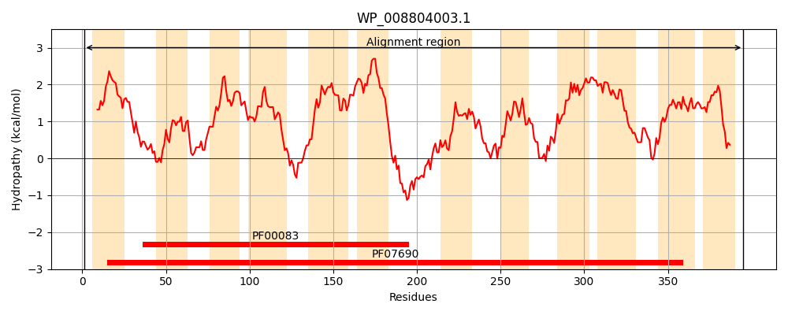
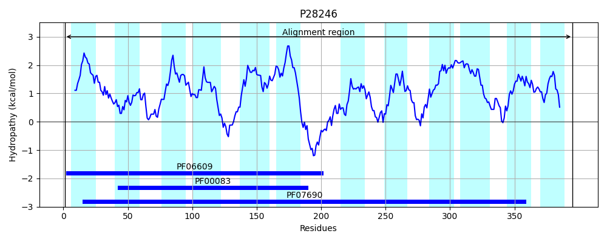
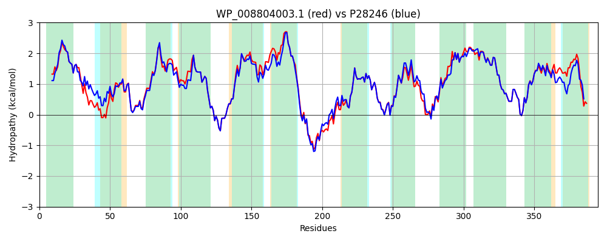

Hit Accession: P28246
Hit TCID: 2.A.1.2.7
Hit Description: gnl|BL_ORD_ID|9635 gnl|TC-DB|P28246|2.A.1.2.7 Bicyclomycin resistance protein (Sulfonamide resistance protein) - Escherichia coli.
Mach Len: 395
e:0.000000
Query TMS Count : 12
Hit TMS Count: 12
TMS-Overlap Score: 12.000000
Predicted Substrates:CHEBI:383703;3,6-diamino-10-methylacridinium chloride, CHEBI:6207;L-cysteine, CHEBI:9337;sulfathiazole, CHEBI:42503;fosfomycin, CHEBI:9474;tetracycline, CHEBI:3091;bicozamycin
BLAST Alignment:
Score: 1734 , Bit scores: 672 bits, E-value: 0.0e+00, Alignment length: 395, Percentage identity: 85
Query: 1 MTVKQNSSLGIVFILGLLAMLMPLSIDMYLPALPVIAAQYNVPDGSAQMTLSTYILGFALGQLLYGPMADSLGRKPVILGGTLVFAAAAVACALSQTIDMLIVMRFFHGLAAAAASVVINALMRDIYPKDEFSRMMSFVMLVTTIAPLVAPMVGGAVLVWFSWHAIFWILALVALLASLMIGLFIRETLPADRRQPFHLRTTLGNFATLFRHKRVLSYMLASGFSFAGMFSFLSAGPFVYININHVAPQHFGYYFALNIVFLFLMTMFNSRFVRRVGALRMFRAGLWIQFAMAVWMVVCALLDVGFWSLVIGVAAFVGCVSMVSSNAMAVILDEFPHMAGTASSLAGTFRFGIGAIIGALLSMATFTTAWPMLISIAFCATCSIFFSLYASRRRK 395
MT +Q+SS IVFILGLLAMLMPLSIDMYLPALPVI+AQ+ VP GS QMTLSTYILGFALGQL+YGPMADS GRKPV+LGGTLVFAAAAVACAL+ TID LIVMRFFHGLAAAAASVVINALMRDIYPK+EFSRMMSFVMLVTTIAPL+AP+VGG VLVW SWH IFWILAL A+LAS MI I+ETLP +RRQPFH+RTT+GNFA LFRHKRVLSYMLASGFSFAGMFSFLSAGPFVYI INHVAP++FGYYFALNIVFLF+MT+FNSRFVRR+GAL MFR+GLWIQF MA WMV+ ALL +GFWSLV+GVAAFVGCVSMVSSNAMAVILDEFPHMAGTASSLAGTFRFGIGAI+GALLS+ATF +AWPM+ SIAFCAT SI F LYASR +K
Sbjct: 1 MTTRQHSSFAIVFILGLLAMLMPLSIDMYLPALPVISAQFGVPAGSTQMTLSTYILGFALGQLIYGPMADSFGRKPVVLGGTLVFAAAAVACALANTIDQLIVMRFFHGLAAAAASVVINALMRDIYPKEEFSRMMSFVMLVTTIAPLMAPIVGGWVLVWLSWHYIFWILALAAILASAMIFFLIKETLPPERRQPFHIRTTIGNFAALFRHKRVLSYMLASGFSFAGMFSFLSAGPFVYIEINHVAPENFGYYFALNIVFLFVMTIFNSRFVRRIGALNMFRSGLWIQFIMAAWMVISALLGLGFWSLVVGVAAFVGCVSMVSSNAMAVILDEFPHMAGTASSLAGTFRFGIGAIVGALLSLATFNSAWPMIWSIAFCATSSILFCLYASRPKK 395 | Protein Hydropathy Plots: |
|---|
|  |  |
Pairwise Alignment-Hydropathy Plot:
|
|---|
|  |